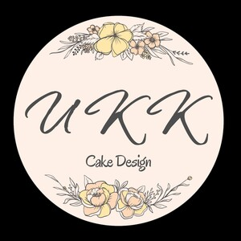

Trade Mark Journal No.2025/025 20 June 2025
UK00004208918 12 June 2025 (30,35,42)

- Class 30
- Baked goods; bakery products; cakes; cupcakes; custom cakes; wedding cakes; celebration cakes; sponge cakes; fondant cakes; decorated cakes; pastries; brownies; muffins; tarts; buns; scones; cookies; biscuits; bread; crepes; pies; meringue; marshmallows; cake pops; cheesecakes; puddings; mousse-based desserts; seasonal desserts; New Year sticky rice cake; steamed cake; mooncakes; petit fours; desserts; sweets; confectionery; edible decorations for cakes and desserts; edible printed cake toppers; chocolate-based decorations; confectionery for decorating cakes and desserts; roasted coffee beans.
- Class 35
- Retail services and online retail services in connection with the sale of baked goods and non-baked confectioneries, including roasted coffee beans, cakes, celebration cakes; wedding cakes; cupcakes, pastries, non-baked cakes, cheesecakes, puddings, seasonal desserts, cookies, biscuits, sweets, custom cakes, and edible cake decorations; advertising and marketing services relating to cake design and dessert products; operation of an online store and online ordering platform for cakes, cookies, desserts, celebration cakes, wedding cakes and cake-related goods, including made-to-order, custom order, and pre-order services.
- Class 42
- Custom cake design services; design consultancy relating to bespoke cakes, cupcakes, celebration cakes, wedding cakes, desserts, cookies, and confectionery; artistic design and decoration of cakes and edible products to client specifications; creation of visual concepts for decorated cakes, seasonal desserts, and pudding-based treats; advisory services relating to the aesthetic styling of cakes and dessert presentation.
Wing Kin Tam